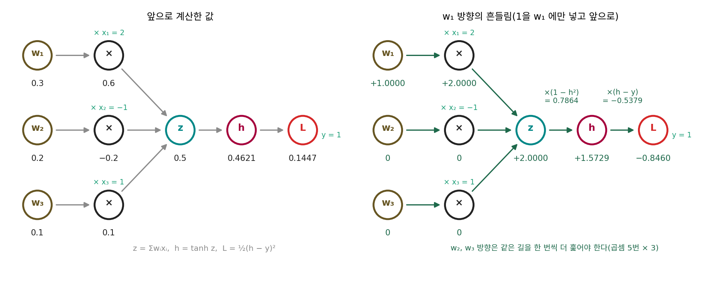
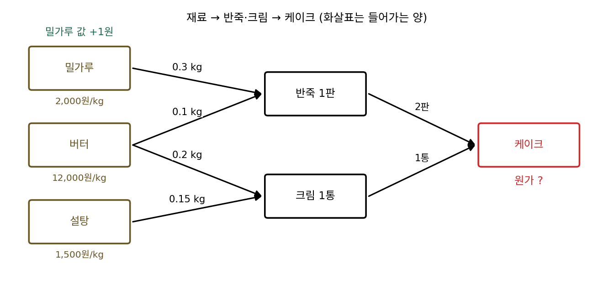
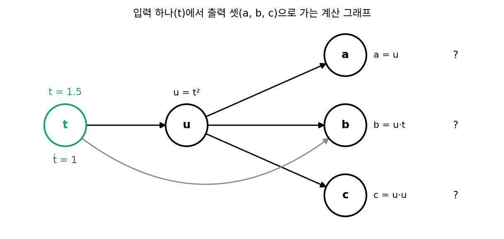
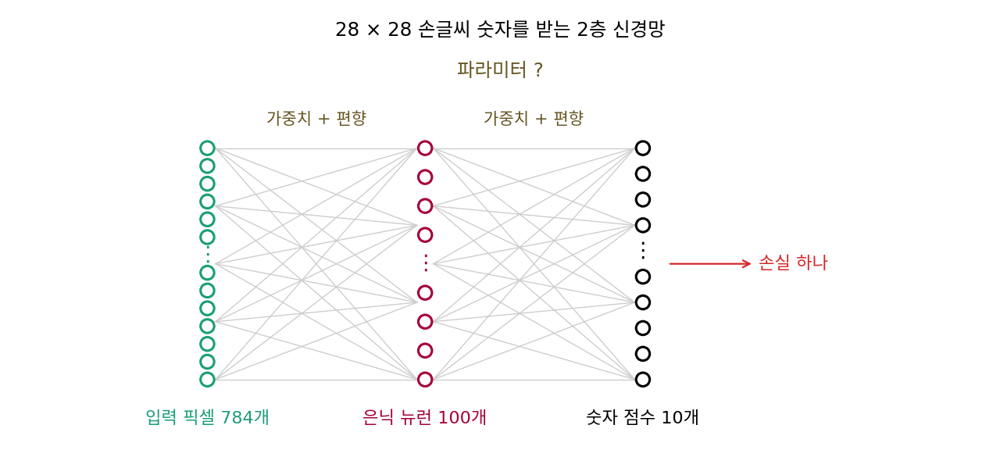

역전파: 자코비안 곱을 거꾸로
이 장의 물음
파이토치로 신경망을 학습시킬 때 그래디언트는 loss.backward() 한 줄로 얻는다. 파라미터(학습으로 고치는 숫자들)가 백만 개든 십억 개든 이 줄 하나가 파라미터마다 손실의 그래디언트를 채워 넣고, 걸리는 시간은 손실을 한 번 계산하는 시간과 자릿수가 같다. 그런데 미분 없이 손실값만 써서 그래디언트를 근사하던 0차 방법(파라미터 하나를 조금 바꿔 손실이 얼마나 변하는지 보는 유한 차분)은 파라미터 하나마다 손실을 한 번씩 더 계산해야 했다. 파라미터가 백만 개면 손실을 백만 번 넘게 계산한다. 같은 그래디언트인데 유한 차분은 손실 계산의 백만 배가 들고 loss.backward()는 몇 배로 끝난다. 두 방법의 비용 차이는 어디서 올까?
미분을 할 줄 안다고 해서 저절로 싸지는 것도 아니다. 손실은 층을 여럿 거친 함수라서, 함수를 이어 붙이면 미분은 단계마다의 미분을 곱한 것이라는 연쇄법칙을 쓰게 된다. 곱셈은 순서를 바꿔도 답이 같은데, 그렇다면 어느 쪽 끝부터 곱하느냐는 상관이 없을까?
그리고 학습을 해 본 사람은 다른 것도 겪는다. 같은 모델로 답을 내기만 할 때는 넉넉하던 GPU 메모리가 학습을 시작하면 모자라서, 미니배치(한 스텝에 쓰는 데이터 묶음)를 줄여야 하는 일이 흔하다. 그래디언트를 구하는 일이 왜 메모리를 그렇게 많이 먹을까?
이 장은 다음 물음에 차례로 답한다.
- 연쇄법칙의 곱셈을 입력 쪽부터 하면 그래디언트 하나를 얻는 데 몇 번을 계산해야 할까?
- 출력 쪽부터 거꾸로 곱하면 무엇이 달라질까? 파라미터가 아무리 많아도 그래디언트가 왜 손실 계산의 몇 배 안에 끝날까?
- 컴퓨터는 사람이 식을 미분해 주지 않아도 반복문과 조건문이 섞인 코드를 어떻게 미분할까?
- 학습은 왜 메모리를 많이 먹을까? 계산을 조금 더 하는 대신 메모리를 줄일 수는 없을까?
순방향 모드: 입력 하나에 대한 방향 미분을 앞으로 실어 나른다
손실의 그래디언트를 미분으로 구할 때 쓰는 연쇄법칙은 함수를 이어 붙였을 때의 미분 규칙이었다. 바깥 함수의 미분과 안쪽 함수의 미분을 곱하고, 여러 변수가 얽혀 있으면 그 곱이 자코비안(벡터 함수의 편미분을 모은 행렬)의 곱이 된다. 신경망의 손실도 선형 결합, 활성화 함수, 손실 함수처럼 작은 계산을 차례로 이어 붙인 함수이니 연쇄법칙이 그대로 통한다. 그런데 파라미터 수백만 개에 대해 그 곱을 실제로 계산하려고 하면, 무엇부터 곱해야 할지 정해야 한다. 가장 먼저 떠오르는 방법은 유한 차분과 같은 생각이다. 입력 하나를 아주 조금 흔들고, 그 흔들림이 층을 지나며 몇 배로 커지거나 줄어드는지 앞으로 따라가는 것이다. 다만 손실을 다시 계산하는 대신 층마다 미분값을 곱해서 따라가는데, 이렇게 하면 그래디언트 하나에 몇 번의 계산이 들까?
역사: 웽거트의 두 쪽짜리 프로그램
입력 하나에 대한 미분을 앞으로 따라가는 계산을 처음 프로그램으로 적은 사람으로 흔히 꼽히는 이는 미국 제너럴 일렉트릭의 무선 유도 부서(뉴욕주 시러큐스)에서 일하던 R. E. 웽거트(R. E. Wengert)다. 그는 1964년 8월 『ACM 회보(Communications of the ACM)』에 두 쪽짜리 글 「간단한 자동 도함수 계산 프로그램(A Simple Automatic Derivative Evaluation Program)」을 실었다. 당시 도함수가 필요한 프로그램을 짜려면 사람이 손으로 미분해 도함수 식을 따로 적어 넣어야 했다. 식이 복잡하면 미분 자체가 고된 일이었고, 손으로 옮긴 도함수 식에 실수가 숨어 있기 쉬웠다. 웽거트는 이 방법을 「분석적인 도함수를 구하기 번거로운 곳에서 빨리 쓸 도구이자, 도함수가 들어 있는 프로그램을 점검하는 도구」로 내놓았다.
그의 생각은 복잡한 식을 직접 미분하지 않는 것이었다. 식을 덧셈, 곱셈, 사인 같은 작은 단계로 쪼개 중간 변수에 담고, 단계마다 값과 그 단계의 미분값을 함께 내주는 작은 서브루틴을 미리 만들어 둔다. 그러면 함수를 계산하는 과정이 끝날 때 도함수가 덤으로 나온다. 그가 글 끝에 붙인 포트란 예제에서는 y = x₁x₂ + sin(x₂x₃)을 다음 표처럼 네 단계로 나눠 계산한다.
| 단계 | 값 | 함께 계산하는 미분 |
|---|---|---|
| 1 | z₁ = x₁·x₂ | ż₁ = ẋ₁·x₂ + x₁·ẋ₂ |
| 2 | z₂ = x₂·x₃ | ż₂ = ẋ₂·x₃ + x₂·ẋ₃ |
| 3 | z₃ = sin z₂ | ż₃ = cos z₂ · ż₂ |
| 4 | y = z₁ + z₃ | ẏ = ż₁ + ż₃ |
점이 붙은 것은 「입력을 조금 바꿨을 때 그 단계의 값이 입력 변화의 몇 배로 바뀌나」, 곧 그 단계의 값을 입력으로 미분한 값이다. 편미분 ∂y/∂x₁을 얻으려면 ẋ₁ = 1, ẋ₂ = ẋ₃ = 0으로 놓고 함수를 한 번 계산한다. ∂y/∂x₂, ∂y/∂x₃도 같은 방식이다. 그래서 웽거트의 「편미분 생성기」 서브루틴은 함숫값을 한 번 구한 뒤, 편미분 하나마다 함수 서브루틴을 한 번씩, 모두 세 번 더 부른다. 입력이 셋이면 세 번이고, 입력이 백만 개면 백만 번이다.

식을 단계로 쪼개서 값이랑 미분을 같이 계산하는 거면, 지금은 파이토치가 알아서 해 주잖아요. 두 쪽짜리 글로 실을 만한 일이었나요?

1964년에 도함수가 필요한 프로그램을 짜던 사람은 무엇을 했다고 했죠?

손으로 미분해서 도함수 식을 따로 적어 넣었다고요. 음, 그러면 손으로 옮긴 도함수 식이 틀려도 프로그램은 그냥 돌아가니까 틀린 줄도 모르겠네요.

그래서 웽거트는 이 프로그램을 도함수 식을 점검하는 도구로도 내놓았어요. 또 지금 파이토치에서는 a * b라고만 써도 곱셈의 미분 규칙이 따라붙죠. 그때 포트란에는 곱셈 기호에 새 뜻을 붙이는 기능이 없었어요. 그 기능(연산자 오버로딩)이 포트란 표준에 들어온 것은 1990년이에요.

아, 그래서 단계마다 값과 미분을 내주는 서브루틴을 따로 만들어 불러야 했구나. 식 하나를 표처럼 네 단계로 풀어 적은 거네요.

그런데 편미분 생성기는 입력 하나마다 함수를 한 번씩 다시 불렀잖아요. 신경망처럼 입력이 많으면, 이 방법으로 그래디언트 하나를 얻는 데 몇 번이나 계산해야 해요?
뉴런 하나를 앞으로 따라가기
웽거트의 방법이 신경망에서 얼마나 드는지 보려면, 신경망을 이루는 세 가지 계산을 모두 갖춘 가장 작은 예가 좋다. 입력 셋을 가중치로 섞는 선형 결합, 선형 결합의 값을 휘는 활성화 함수, 정답과의 차이를 재는 손실 함수다. 이 세 계산을 한 줄로 이으면 뉴런 하나짜리 신경망이 되고, 파라미터가 셋이라 「입력마다 한 번」이 몇 번인지 눈으로 셀 수 있다.
데이터는 x = (2, −1, 1)이고 정답은 y = 1, 파라미터는 w = (0.3, 0.2, 0.1)로 두자(이 책에서 고른 값이다). 1층에서 z = w₁x₁ + w₂x₂ + w₃x₃ = 0.6 − 0.2 + 0.1 = 0.5, 2층에서 h = tanh z = 0.4621, 3층에서 손실 L = ½(h − y)² = 0.1447이다. 이렇게 계산을 작은 칸으로 쪼개고 「어느 칸의 값이 어느 칸으로 들어가는가」를 화살표로 이은 그림을 계산 그래프(computational graph)라 한다. 웽거트의 표에서 단계 하나가 칸 하나다.
이제 w₁만 흔들었다고 하자. 칸마다 「w₁이 조금 바뀔 때 그 칸의 값이 몇 배만큼 바뀌나」, 곧 각 칸의 값을 w₁로 미분한 값을 따라간다. 이 값을 그 칸의 방향 미분 (w₁ 방향으로 잰 변화율 / directional derivative, 자동미분 문헌의 tangent)이라 하고, w₁ 자신의 방향 미분은 1로 놓는다(w₁을 w₁로 미분하면 1이다). 곱셈 칸 w₁x₁의 방향 미분은 1에 x₁ = 2를 곱한 2이고, 나머지 두 곱셈 칸은 0이다. 덧셈 칸 z는 받은 방향 미분을 더해 2가 된다. tanh 칸은 z의 방향 미분 2에 tanh의 미분 1 − h² = 0.7864를 곱해 1.5729, 손실 칸은 다시 ½(h − y)²의 미분 h − y = −0.5379를 곱해 −0.8460이 된다. 손실 칸의 방향 미분 −0.8460이 바로 ∂L/∂w₁이고, 층마다 하는 일은 국소 미분값을 곱하는 것 하나다.
칸마다 「그 칸의 국소 미분값 × 들어온 방향 미분」을 계산해 다음 칸으로 넘기는 것이 전부다. 이렇게 입력 하나에 1을 넣고 연쇄법칙의 곱을 입력 쪽부터 계산해 앞으로 실어 나르는 방법을 순방향 모드 (앞으로 미분하기 / forward mode)라 한다. 1을 넣은 입력에 대해서는 출력이 몇 개든 한 번에 미분이 나온다.

곱셈을 세어 보자. 셀 때의 약속은 「국소 미분값 × 들어온 방향 미분」만 세고 덧셈은 세지 않는 것이다. 국소 미분값 1 − h², h − y, xᵢ는 값을 계산하는 동안 이미 구해 두었다고 본다. 한 번 훑을 때 곱셈 칸 셋에서 3번(방향 미분이 0인 칸도 곱셈은 한다), tanh 칸에서 1번, 손실 칸에서 1번, 모두 5번이다. 그래디언트의 세 칸 (−0.8460, 0.4230, −0.4230)을 다 얻으려면 ẇ₂, ẇ₃에 차례로 1을 넣고 같은 계산 그래프를 두 번 더 훑어야 하므로 15번이다.
입력이 n개인 뉴런이면 한 번 훑을 때 곱셈이 n + 2번이고 그것을 n번 하므로 n(n + 2)번이다.
| 입력 수 n | 순방향 모드로 그래디언트 전체를 얻는 곱셈 수 n(n + 2) |
|---|---|
| 3 | 15 |
| 100 | 10,200 |
| 1,000 | 1,002,000 |
| 1,000,000 | 1,000,002,000,000 |
파라미터가 열 배가 되면 비용은 백 배가 되는데, 웽거트의 편미분 생성기가 함수를 입력 수만큼 부른 것과 같은 사정이다. 유한 차분과 달리 근사가 아닌 정확한 미분이 나오지만, 「입력 하나에 한 번」이라는 점은 유한 차분과 같다.
ML에서: 입력은 적고 출력은 많을 때
순방향 모드가 쓸모없는 것은 아니다. 1을 넣은 입력 하나에 대해서는 출력이 몇 개든 한 번 훑기로 모든 출력의 미분이 나온다. 그래서 「입력 하나, 또는 입력 공간의 한 방향에 대해, 많은 출력이 얼마나 민감한가」를 물을 때는 순방향 모드가 맞는 도구다. 파이토치에는 이것을 계산하는 함수 torch.func.jvp가 따로 있다. 이름의 jvp는 자코비안–벡터 곱(Jacobian-vector product)의 머리글자로, 자코비안에 방향 벡터 하나를 곱한 값, 곧 위에서 한 「한 방향으로 한 번 훑기」의 결과를 돌려준다. 손실처럼 출력이 하나뿐이고 파라미터가 수백만 개인 경우는 그 반대 모양이다.
문제 1. 빵집의 원가표
동네 빵집의 케이크 한 개는 반죽 2판과 크림 1통으로 만든다. 반죽 1판에는 밀가루 0.3 kg과 버터 0.1 kg, 크림 1통에는 버터 0.2 kg과 설탕 0.15 kg이 든다. 재료 값은 1 kg에 밀가루 2,000원, 버터 12,000원, 설탕 1,500원이다(이 책에서 지은 값). (가) 케이크 한 개의 원가는? (나) 밀가루 값만 1원 오르면 케이크 원가는 몇 원 오르는가? 「재료 → 반죽·크림 → 케이크」 순서로 1원 오른 값이 어디까지 번지는지 따라가 보라. (다) 세 재료의 값이 각각 1원 오를 때의 영향을 모두 알려면 원가표를 몇 번 훑어야 하는가? 곱셈은 몇 번인가?

(가)는 반죽 한 판이 600 + 1,200 = 1,800원, 크림이 2,400 + 225 = 2,625원이니까 1,800 × 2 + 2,625 = 6,225원이에요. (나)는 밀가루가 반죽에만 들어가니까 0.3원이요.
밀가루 값이 1원 오르면 반죽 한 판이 0.3원 오르죠. 그다음엔 그 0.3원이 어디로 가나요?
아, 케이크에 반죽이 두 판 들어가니까 0.3 × 2 = 0.6원이네요. 반죽에서 멈추면 안 되고 끝까지 따라가야 하는구나.
버터는 반죽과 크림 두 곳에 들어가. 반죽을 거쳐 0.1 × 2 = 0.2원, 크림을 거쳐 0.2 × 1 = 0.2원, 합쳐서 0.4원이야. 설탕은 크림만 거쳐서 0.15원.
세 재료를 다 구하는 동안 원가표를 몇 번 훑었죠?

재료마다 한 번씩 세 번이요. 밀가루를 따라갈 때도 버터와 설탕 칸은 0으로 두고 곱셈은 다 했으니까, 한 번에 곱셈 5번씩 15번이에요. 재료가 백 가지인 빵집이면 백 번 훑어야겠네요.

조별 과제에서 「누가 하루 늦으면 마감이 며칠 밀리나」를 사람마다 따로 일정표 처음부터 다시 따져 본 적이 있는데, 그게 이거였어요. 다섯 명이면 일정표를 다섯 번 봤어요.
문제 2. 입력 하나, 출력 셋
입력 t 하나에서 u = t², 그리고 출력 세 개 a = u, b = u·t, c = u·u를 계산한다. (가) t = 1.5일 때 세 출력의 값은? (나) t의 방향 미분 ṫ = 1을 넣고 앞으로 한 번 훑어 세 출력의 미분 da/dt, db/dt, dc/dt를 구하라. 곱셈은 몇 번인가? (다) 출력 쪽에서 시작해 거꾸로 따라가는 방법이 있다면, 세 미분을 다 얻는 데 몇 번 훑어야 할 것 같은가?

(가)는 2.25, 3.375, 5.0625요. (나)는 출력이 셋이니까 세 번 훑어야 하지 않나요? 출력마다 하나씩요.
순방향 모드에서 1을 넣는 곳은 어디죠? 입력이에요, 출력이에요?
입력이요… 입력은 t 하나뿐이네요. 그럼 한 번이에요.
그 한 번을 직접 훑어 볼까요? u̇부터요.
u̇ = 2t·ṫ = 3, ȧ = u̇ = 3, ḃ = u̇·t + u·ṫ = 4.5 + 2.25 = 6.75, ċ = 2u·u̇ = 13.5. 곱셈을 세면 u̇에서 2번, ḃ에서 2번, ċ에서 2번, 모두 6번이에요.
확인해 보면 2t = 3, 3t² = 6.75, 4t³ = 13.5로 맞아. 순방향 모드는 입력 수만큼 훑고, 출력이 몇 개든 상관없구나.

그럼 (다)는요? 출력 쪽에서 시작한다면 무엇을 하나씩 정해야 할까요?

출력 쪽에서 시작하면 「어느 출력의 미분을 구하나」를 하나 정해야 하니까 출력 수만큼, 세 번 훑어야 할 것 같아요. 문제 1의 빵집과 모양이 반대예요. 빵집은 입력(재료)이 셋이고 출력(원가)이 하나였고, 여기는 입력이 하나고 출력이 셋이에요. 어느 쪽에서 출발하느냐가 「몇 번 훑나」를 정하네요.
가게 하나의 가격표를 바꾸면 전단지 세 장이 한꺼번에 바뀌는 거랑 같네요. 가격표가 입력 t, 전단지 세 장이 출력 a, b, c고요. 원인 하나에서 결과 여럿으로 퍼지는 건 한 번에 따라갈 수 있어요.
문제 3. 손글씨 숫자 분류기의 그래디언트
가로세로 28칸짜리 흑백 손글씨 숫자 그림(픽셀 784개)을 받아 은닉 뉴런 100개를 거쳐 숫자 10개의 점수를 내는 2층 신경망이 있다. (가) 가중치와 편향을 합친 파라미터는 몇 개인가? (나) 순방향 모드로 손실의 그래디언트 전체를 얻으려면 몇 번 훑어야 하는가? 한 번 훑는 데 1밀리초가 든다고 치면(가정) 한 스텝에 몇 초인가? (다) 「픽셀 하나를 바꾸면 숫자 열 개의 점수가 각각 얼마나 바뀌나」를 알고 싶다면 몇 번 훑으면 되는가?

784 × 100 + 100에 100 × 10 + 10을 더하면 79,510개요. 순방향 모드면 79,510번 훑어야 하니까 79.5초, 1분 20초쯤이에요. 학습 한 스텝에요?
학습은 보통 몇 스텝을 하죠?

수천 스텝은 하죠. 이 작은 모델도 한 스텝에 1분이 넘으면 며칠이 걸려요. 그런데 0차 방법(유한 차분)으로 해도 손실을 79,511번 계산해야 하니까 비슷하네요. 순방향 모드는 정확하다는 것만 나아요.
(다)는 1을 넣는 곳이 픽셀 하나야. 문제 2처럼 입력 하나에 출력이 여럿이니까 한 번 훑으면 열 개 점수의 미분이 다 나와.
같은 신경망인데 (나)는 79,510번, (다)는 한 번이에요. 79,510번과 한 번의 차이는 무엇이 만들었을까요?
미분하는 「대상의 모양」이요. (나)는 출력이 손실 하나고 입력이 79,510개라서 순방향 모드에 가장 불리한 모양이에요. 학습은 늘 이 모양이고요. 출력이 하나인 쪽에서 시작하는 방법이 있다면 (나)도 한 번에 끝날 텐데요.

손실이 하나라는 게 쓸 수 있는 성질이었네요. 리포트 채점표가 항목 79,510개를 점수 하나로 모으는데, 항목마다 채점표 전체를 처음부터 다시 훑고 있었던 거예요.